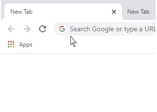

It's all about saving type errors
How many times you finish typing just to find out that you used the wrong language and end up with a nonsense gibberish text?I'm sure that if you have to switch between keyboard languages (like me ), you are very familiar with this annoying problem and that's why I have decided to develop this useful utility.
So, if you are not a native English speaker and you have more than one keyboard language layout, this software IS FOR YOU.
Language Indicator Main Features:
In place flag indicator
Whenever you put the cursor inside an edit box, a little flag will show up indicating the current keyboard language just before you start typing.
In place language change
You can change the keyboard language right away by clicking on the flag indicator.
Application default language
You can predefine the default language for any application, so every time you switch to that application,
the keyboard layout language will be changed automatically to the default one.
Caps Lock indication
If Caps Lock button is pressed, an appropriate indication will be displayed instead of the language flag.
If you have any questions, please contact me here.
For more information, please click here.

Language Indicator is totally free but if you like it and want to support this project you can simply buy me a coffee (-: